Module 1: The Law of Supply and Demand
- Any chart is a sequence of supply and demand zones.
- If you want to become a smart money trader, you first need to learn the law of Supply and Demand.
- According to Wyckoff Theory, supply and demand determines the price direction:
- If demand is greater than supply, the price will rise.
- If supply is greater than demand, the price will go down.
- If supply and demand are in balance, there’s no significant price change.
- This is one of the most basic principles of all financial markets.
- There are 2 types of market participants: Aggressive and Passive.
- Aggressive Participants: They use “at market” orders. They have urgency to enter and attack the best price possible. The real engine of the market since they are the ones that initiate the transactions. i.e., An aggressive participation of traders will produce a change in price.
- Passive Participants: They use limit orders. The interaction between aggressive buyers, aggressive sellers, passive buyers and passive sellers is what moves the price. i.e., Passive orders have the ability to stop a move, but not the ability to make the price move. .
Upward Price Movement
- For the price to move upwards, buyers must buy all supply orders available at that level and continue buying aggressively to force the price up, to find new sellers to trade with.
- Passive buy orders can slow downward movement but cannot push prices up on their own.
Downward Price Movement
- For the price to move downward, sellers must consume all demand orders at that level and continue pushing down, forcing the price to go in search of buyers at lower levels.
- Passive sell orders can slow upward movement but cannot drive prices down alone.
- In a rising market, as long as buying consumes liquidity (supply) at higher levels, price will rise.
- In a declining market, as long as selling consumes liquidity (demand) at lower levels, price will fall.
Three-Step Process (Market Turn):
- Exhaustion: Buyers lose interest in continuing to buy.
- Absorption: Smart money places more sell orders; many Passive sellers appear.
- Initiative: More and more Aggressive sellers are entering the market.

Module 2: Supply & Demand Trading
- If you want to improve your trading performance and trade along with the big players, implement supply and demand concepts in your strategy.
- Identify areas where smart money has placed their orders to benefit from their influence.
- A supply zone is where smart money has sold at high prices, creating bearish pressure that pushes the price down.
- A demand zone is where smart money has bought at low prices, creating bullish pressure that pushes the price up.
- If prices revisit these supply and demand zones, they are likely to be rejected.
- To determine optimal zones, look for sharp price increases or decreases, known as market imbalances, significant price shifts in one direction, indicating smart money involvement.

To Identify Demand Zones
- Look for fast impulse moves, focusing on big green candles.
- Locate the base of the zone: place a line at the high of the most recent red candle before the impulse move, and another at the most recent swing low.
To Identify Supply Zones
- Look for fast impulse moves with big red candles.
- Locate the base: find the most recent up candle before the drop, place a line at its low, and another at the most recent swing high.
Follow 2 Rules to Identify Right Zones
- Trade only fresh and untouched zones because supply and demand zones are one-time use. Once price hits and reverses, the zone loses its power and the probability of causing another reversal in the future is over.
- Recent zones are more important than older ones; newly created areas are more effective.
Types of Supply and Demand Zones
- Continuation: Rally-Base-Rally
- Forms a demand zone during an uptrend.
- The market structure begins with a rally followed by consolidation and ends with another rally which creates the demand zone.
- Continuation: Drop-Base-Drop
- Forms a supply zone during a downtrend.
- The market structure begins with a price decrease followed by consolidation and ends with another price decrease which creates the supply zone.
- Reversal: Drop-Base-Rally
- Forms a demand zone where market changes from down to up.
- Reversal: Rally-Base-Drop
- Forms a supply zone where market changes from up to down.
- When price returns to these zones, it usually moves in the same direction as the zone’s creation.
- The advantage of supply and demand trading is better understanding of market structure and dynamics.
Module 3: The Law of Effort and Result (Wyckoff Theory)
- The effort made by aggressive and passive buyers and sellers will be reflected in the price movement of any market.
- Market is a battle between buyers and sellers, and the direction of the market is determined by the side with the greatest effort, represented by the volume.
- High volume indicates strong market participation, while low volume indicates weak participation.
- Volume is very important because it provides insight into market sentiment and future price movements. It’s easier to understand once you grasp supply and demand principles.
- This requires relating volume to price action.
- If there is tighter consolidation between support and resistance containing more than 100–120 candle bars, and the candle closes above resistance with price buildup, chances are high that price will continue rising. The longer it ranges, the harder it breaks.
- For a valid shooting star candle, an uptrend must exist before the pattern appears.
Momentum Candles
- Momentum candles are single candlesticks with a body more than twice the size of previous ones.
- These candles signal full bullish or bearish control and often lead to strong momentum continuation.

Module 4: Volume Spread Analysis (VSA)
- If you want to identify the signs of market manipulation and follow smart money footsteps, you need to learn VSA.
- Volume indicates how many buyers and sellers are supporting the move. Price movement is stronger when supported by high volume.
- VSA (Volume Spread Analysis) allows you to identify signs of manipulation and follow smart money footsteps.
- VSA can reveal when smart money is accumulating or distributing, testing supply or demand, or preparing to start/reverse a trend.
- VSA is based on the premise that volume is the fuel driving price movements.
- Volume is the amount of trading activity during a period, while Spread (Range) represents the difference between open and close prices of a candlestick.
- Analyzing the relationship between volume and spread reveals supply and demand dynamics in the market.
- When volume and spread are in harmony, buyers and sellers are balanced, and the market tends to continue in the current direction.
- When volume and spread are in disharmony, there’s an imbalance — the market may reverse or consolidate.
- When price and volume move together, it indicates strong continuation. For example, an uptrend with increasing volume signals strength.
- Divergence between price and volume suggests disagreement — the move may not be sustainable. For example, if volume decreases during an uptrend, continuation is unlikely.
- VSA is the second component of the Smart Money Trading Plan.
Module 5: The Law of Cause and Effect
- The differences between supply and demand are not random; they come after periods of preparation, as a result of specific events. For the market to develop an effect (trend), first there must be a cause (namely, accumulation/distribution).
- Every price move has a cause. Changes cannot happen out of nowhere; a cause must be established first.
- The cause develops during periods of sideways movement or when the market is ranging (look for small ranges or low volatility periods).
- The longer this process continues, the larger the expected resulting move.
- After a period of consolidation, there is an expansion or explosive move in price.
Module 6: The Composite Man AKA SMART MONEY
- Wyckoff created the idea of the composite man as an imaginary identity of the market.
- The single entity responsible for controlling the market.
- It always acts in his own best interest to ensure he can buy low and sell high.
- Think of the composite man as an evil entity, controlling markets by pushing bottoms.
- His single objective is to move the markets to your disadvantage, seeking to maximize his profit at "your" expense.
- Wyckoff Composite Man:
- He plans and executes his deceptions well in advance.
- He’s basically there to fool you into buying positions that he has already accumulated.
- He will tempt you to buy and sell at the worst possible time.
- Have you ever had the feeling that someone is watching your positions?
- That you enter the market, and immediately after, price goes against you?
- The market is quiet, with low activity, and as soon as you enter, the price starts jumping up and down?
- It’s like someone is driving prices, playing with your emotions.
- The Composite Man represents the biggest players (so-called smart money). It always acts in its interest to ensure that it can buy at a discount and sell at a premium.
- The Composite Man’s behavior is the opposite of retail traders, and in order to adapt to changing market conditions, we, retail traders, must learn from his behavior.
- If you don’t understand the game as he plays it, you’ll take the wrong side of the trade and you’ll sit in front of your screen, desperate as the market moves once again against your position.
- Your objective is to understand the game as he plays it, so you’ll stop taking the wrong side of the trade.
- In order to understand the behavior of the composite man, you first have to understand the concept of liquidity.
 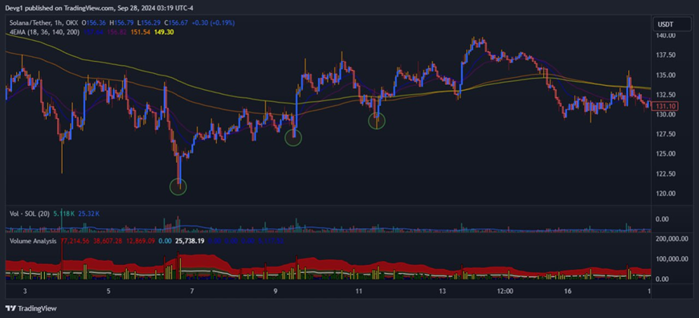
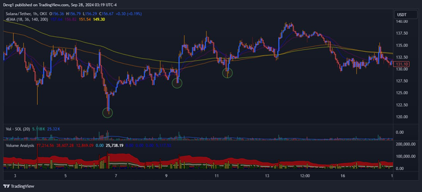

Module 7: Liquidity Clear-Outs
- Liquidity: Liquidity plays a crucial role in a market’s functionality. An ample participation from buyers and sellers is necessary for a market to be considered rich in liquidity. This is why market makers and smart money often engage in liquidity hunting or liquidity clear-outs, which involves extracting liquidity from the market by flushing out weak players.
- The goal of this strategy is to take advantage of the liquidity that is provided by the stop-loss orders of other traders.
- Liquidity hunting works by identifying areas of high concentration of stop-loss orders in the market. These areas are usually near support and resistance levels, where many traders place their stops to protect their positions.
- Smart money, or the Composite Man, will then push the price towards these levels, triggering the stop-loss orders and creating a spike in volume and volatility. This spike can also cause other traders to panic and join the move, creating a double trap.
- Once the liquidity hunters have filled their orders at favorable prices, they will quickly reverse their positions and drive the price back to its original range.
- This can leave many traders with losses or missed opportunities, while the Composite Man profits from the price swing. This is one of the main strategies used by smart money to make money.
- Liquidity is the third component in the smart money trading plan.


Module 8: Think Like a Smart Money Trader
- If you are a retail trader who wants to succeed in the market, you need to learn how to think like a smart trader:
- Imagine you don’t have a 5000 dollars account, you have a 1 billion dollar account!
- You have the power to influence price movements and develop trends on the market.
- You have access to more information, more resources, and more capital than 99% of retail traders, and you need to use various tactics to deceive and manipulate other traders to your advantage.
- How would you do it?
- You wouldn’t trade like most retail traders. You’re in the business of making money, so you need many tactics to create false signals, traps, and illusions in the market.
- Smart money are not necessarily smarter than retail traders. They are simply more experienced, disciplined, and strategic.
- They have a clear understanding of how the market works, how other traders behave, and how they can exploit their emotions and biases.
- They do not trade based on predictions, opinions, or hopes. They trade based on probabilities, facts, and evidence.
- Smart money does not care about being right or wrong. They care about making money.
- They are flexible and adaptable to changing market conditions.
- They do not chase after trades or revenge trade. They wait patiently for high-probability opportunities and execute them with precision.
- Smart money does not follow the crowd. They lead the crowd.
- They do not rely on lagging indicators, news, or tips from others.
- They do not trade what they see or hear.
- They trade what they know and understand.
- They do not react to the market. They anticipate the market.
Module 9: Tactics Used by Smart Money to Trap You
A Game of Psychology and Deception
- Smart money know that most retail traders are driven by fear and greed, and they use these emotions against them.
- They use various tactics to create false signals, traps, and illusions in the market that lure retail traders into making bad trades or missing out on good ones.
Tactic No. 1 – Stop Hunting
Smart money pushes the price to a level where they know many retail traders have placed their stop losses or take profits. This triggers a cascade of orders that either liquidates their positions or fills their orders at unfavorable prices. This allows smart money to either exit their positions with a profit or enter new positions at a better price.
Tactic No. 2 – Fakeouts
Smart money creates a false breakout of a support or resistance level that attracts many retail traders to enter in the direction of the breakout. However, after a few candles, the price reverses sharply in the opposite direction, trapping those traders in losing trades.
Tactic No. 3 – Whipsaws
Smart money creates a lot of volatility and noise in the market that confuses many retail traders. The price moves up and down rapidly without any clear direction or trend, causing many traders to exit their trades prematurely or switch sides frequently.
- The reality is that many retail traders will use the same price levels to place their entries or stop losses. These are the perfect zones for smart money to trigger one of their traps!
- Why is this difference between retail traders and smart money?
Because smart money doesn’t trade like retail traders who rely on technical analysis, indicators, or chart patterns. Institutional players cannot trade the same way because in low liquidity areas, their large orders would push price too far. Smart money uses high liquidity zones to place their large orders without excessively impacting the price.
Module 10: Smart Money Traps - Fake Breakout at the High/Low of the Day
- If you are a day trader, you have probably experienced the frustration of being stopped out of a trade by a sudden spike in price at the high or low of the day - one of the most common ways that smart money manipulates the market to trap retail traders. These are the price movements that break a significant level of support or resistance, in this case the high or low of the day, but fail to sustain the momentum and quickly reverse back into the previous range. 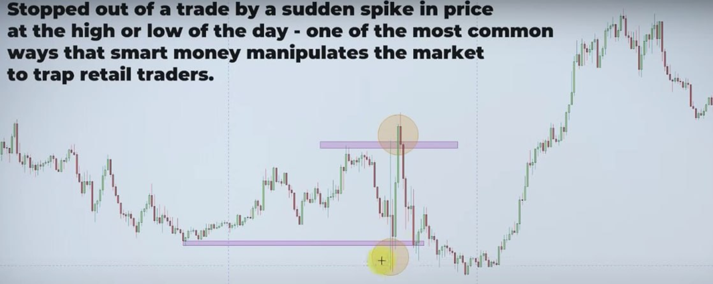 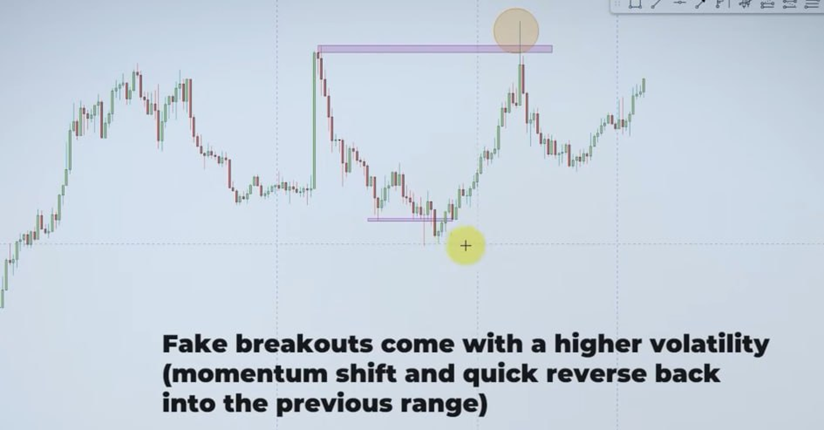
Smart money uses these fake breakouts for two main reasons:
- Smart money may push the price above the high of the day to trigger stop losses and buy orders from retail traders, trapping those who are following the breakout. This creates a surge in demand that drives the price higher. 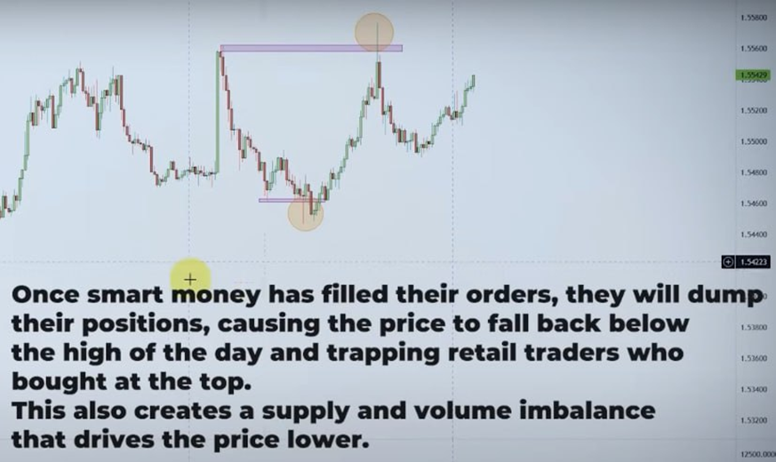
- But you can identify this by analyzing the volume and looking for common price action patterns. Fake breakouts often form specific price action patterns that signal a reversal or continuation of the trend. For example:

- Double top at the high of the day, after a fake breakout
- Double bottom at the low of the day, after a fake breakout
- Look for reversal candlestick patterns that indicate bullish or bearish sentiment in the market. For example – pin bars or candles with large wicks are a clear sign of rejection after a failed breakout.
Module 10: Smart Money Traps - Asian Session Trap
- The Asian trading session is one of the main zones targeted by the smart money – characterized by low volatility and tight trading ranges.
- The Tokyo range trap is a common phenomenon, especially in Forex, Crypto, and Indices markets. It occurs during the Asian session, typically characterized by low volatility and tight ranges.
- The Tokyo range trap refers to situations where smart money uses the session range to trap retail traders into false breakouts and reversals, then exploits their positions during the more volatile and liquid London and New York sessions.
- One common tactic is creating a false breakout of the Tokyo range – the high and low of the price action during the Tokyo session.
- Price moves beyond the range, then quickly reverses back inside, creating a false signal for retail traders who enter or exit based on the breakout, only to find himself trapped in losing positions when the price moves against him.
- Another tactic is the false reversal of the Tokyo range, the opposite of a false breakout.
How to Avoid the Tokyo Range Trap
- Use volume to measure the strength of the breakout.
- High volume outside the Tokyo range indicates strong market participation and conviction behind a price movement.
- Low volume outside the Tokyo range shows weak participation and low conviction behind a price movement.
- A high-volume breakout or reversal is more likely to be genuine than a low-volume one.
- Study past examples of how the Tokyo range trap has affected market trends.
- Analyze past Tokyo sessions to find patterns: In this example, traders who have taken short positions at the top of the Asian range had their stop losses hunted, outside of the range. Each time, the market reversed aggressively in the opposite direction. The upward movement outside of the range also seduced traders to take long positions, hoping for breakout trade and that’s the second batch of traders, who were trapped i.e., long breakout traders were also trapped! 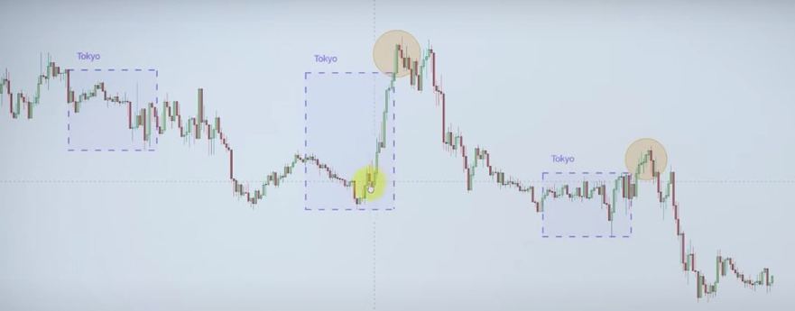
Module 10: Smart Money Traps – Wedges/Triangles Trap
- Wedges & Triangles are two of the most common chart patterns that traders use to identify potential reversals or continuations in the market. But be careful, not all wedges and triangles are genuine!
- Sometimes, they are deliberately created by smart money to trap retail traders.
- Wedges and Triangles are usually formed by two converging trend lines that connect the highs and lows of price action. They indicate a period of consolidation, where the market is indecisive and the trading range narrows.
- Point to be noted: Smart money knows that many traders rely on wedges and triangles to make trading decisions. They can use these patterns to create false signals and lure unsuspecting traders into traps.
- You’ll often see that price breaks out of a wedge or a triangle in one direction but then quickly reverses and moves in the opposite direction – this creates confusion and panic among traders who followed the initial breakout signal and entered positions in that direction.
- The idea is to trap traders on the wrong side of the market. For example, this will result in a sharp decline in price and a minor reversal of the uptrend.
- Smart money can create a symmetrical triangle or wedge pattern in a sideways market and induce stop runs on both sides of the triangle. This causes traders who entered positions based on either side of the breakout to exit their trades at a loss.
- Smart money will take advantage of this liquidity and enter positions in their desired direction. 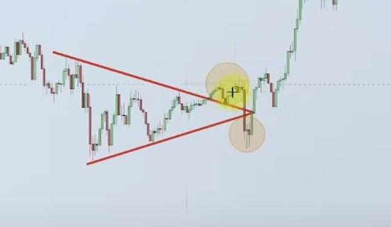
- The reality is that it’s very hard to know for sure whether a wedge or a triangle pattern is genuine or fake.
- In such cases, there is no way of predicting which direction the price will ultimately break out. Avoid trading during this type of consolidation. 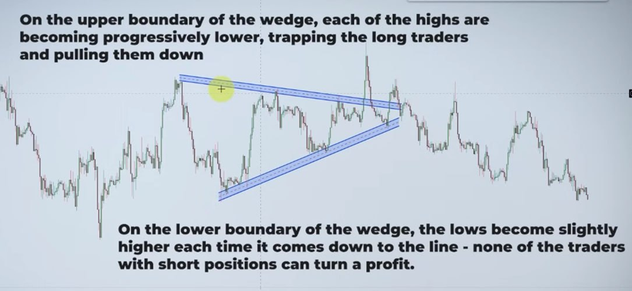
 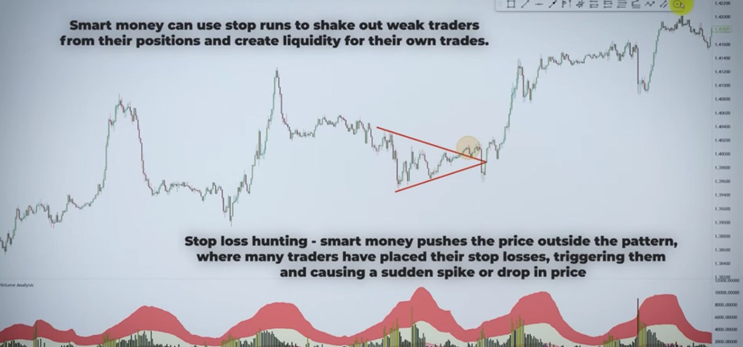
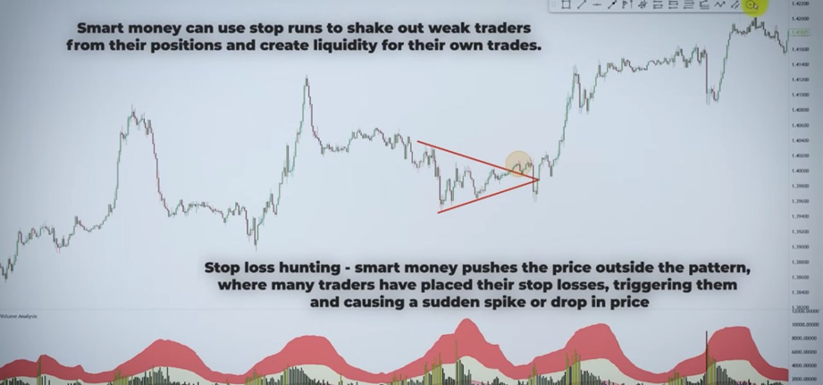
If you want to be active in the market, volume is the only indicator that will help you anticipate future direction.
Monitor the Volume: Generally, volume should decrease as a wedge or a triangle forms, indicating that traders are waiting for a breakout signal.
Module 10: Smart Money Traps – Market Open Manipulation
- Market open manipulation is another trap which refers to the deliberate actions of smart money to create false impressions of supply and demand in the market.
- These actions are designed to influence price movements and the psychology of retail traders, who often trade based on technical analysis, indicators, or news. It’s the reality that every trader has to face and deal with.
- The market open manipulation happens for two main reasons: smart money wants to take profit from their existing positions or to accumulate or distribute more positions at favorable prices.
- For example: this will trigger stop-loss orders and panic selling from retail traders.

There are many types of market manipulation that smart money can use to trick retail traders. By now, you already know them:
- Fake Breakouts: Smart money pushes the price above or below a significant support or resistance level, only to reverse it shortly after. This creates a false signal that the market is trending in one direction when in fact it’s going in the opposite direction.
- Stop-Loss Hunting: Smart money targets the areas where retail traders place their stop-loss orders, such as below support levels or above resistance levels.
- False Signals: Smart money uses indicators, news events, or other factors to generate misleading signals that contradict the actual market direction. For example, smart money may release positive news about a stock before the market opens, causing retail traders to buy into the hype. Or they deliberately move the price above a common moving average, enticing moving average traders to enter. Once the market opens, smart money sells their positions at high prices and then drives the price down. 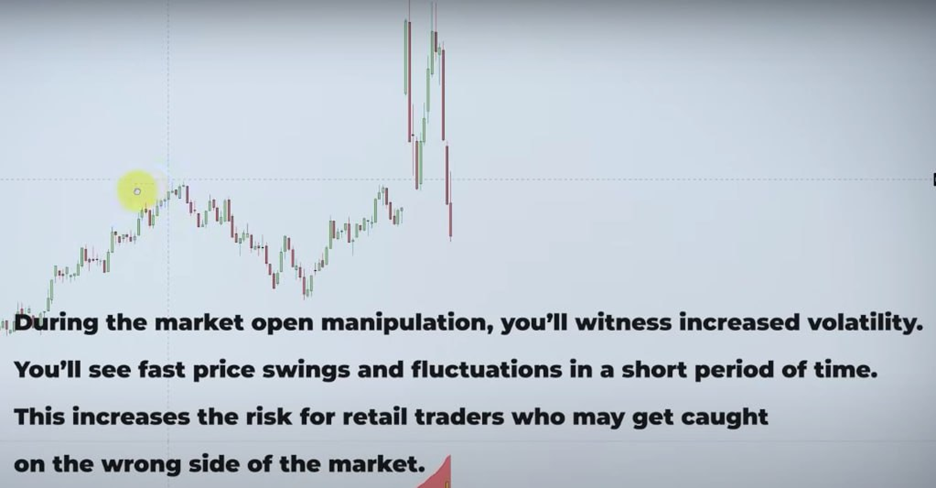
- Market open manipulation can reduce liquidity in the market by creating artificial supply and demand imbalances. This can make it harder for retail traders to enter or exit their positions at favorable prices.
- For beginner traders, it’s very hard to make money in these conditions. The market open trap can distort the true direction and strength of market trends, confusing retail traders who rely on trend-following strategies or indicators.
Module 10: Smart Money Traps – Accumulation / Distribution Trap
- Trading is a game of psychology and strategy, where smart money traders try to outsmart and outplay retail traders who often lack the knowledge, experience, and discipline to succeed in the market.
- One of the ways that smart money gains an edge over retail traders is by using accumulation and distribution strategies to manipulate and trap them. 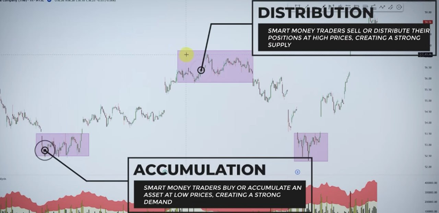
- The goal of these strategies is to create false signals and expectations in the market that lure retail traders into buying or selling at the wrong time.
During Accumulation:
- Smart money traders may create a downtrend or a consolidation pattern, making it appear that the market is weak or bearish. This may induce retail traders to sell their positions or short the market, expecting further price declines.
- Smart money will suddenly reverse the trend and push the price up, triggering stop losses of retail traders with short positions. This creates a bullish breakout that attracts more buyers into the market, allowing smart money traders to distribute their positions at high prices.
During Distribution:
- Smart money may create an uptrend or a consolidation pattern, making it appear that the market is strong and bullish. This may induce retail traders to go long, expecting further price increases.
- Once smart money has distributed enough positions at high prices, they may suddenly reverse the trend and push the price down, triggering stop losses of retail traders who went long. This creates a bearish breakdown that attracts more sellers into the market, allowing smart money traders to accumulate more positions at low prices.
- Smart money traders often use volume to confirm or conceal their accumulation and distribution strategies.
- During the accumulation phase, smart money traders may use low volume to hide their buying activity and create a false sense of weakness in the market.
- However, if you analyze price action during this phase, you’ll see higher lows at the bottom of the accumulation, which is a bullish signal.
- Smart money traders will use support and resistance to test and break the confidence and conviction of retail traders by creating false breakouts that trap them on the wrong side of the market.
- During the accumulation phase, known as “The Spring,” smart money traders will usually use the support level to create false breakdowns that make retail traders think the price will fall further below support.
Module 11: How to Align with Smart Money
- Trading will always be a game between the smart money against the dumb money.
- Retail traders might see some patterns as continuation ones, but the smart money are seeing them as reversal patterns!
- You’ve seen the different traps used by big players. In order to align yourself with their true intentions, always remember that smart money is always searching for pockets of liquidity in order to fill their desired positions in the market!
- They are always looking to shake out weak hands, particularly around support and resistance levels that are being widely watched.
- Your New Trading Plan: Reconsider how you trade and start building a strategy that allows you to join the smart money after a liquidity clear-out or after an obvious market trap.
- Big players need lots of liquidity in order to fill their massive orders.
- How do they get this liquidity? By creating well-known retail chart patterns and traps in order to involve retail traders into the market.
- For retail traders like you and me, the aim should be to spot potential liquidity zones and join the game of the market makers, avoiding being a liquidity target.
- The simplest structure to pay attention to are zones with equal highs or lows. Always assume smart money will want to trap traders around these areas!
- A liquidity clear-out should always present itself with a rapid, strong reversal move after a critical area is taken out – a rapid rotation of price back into the previous trading range.
 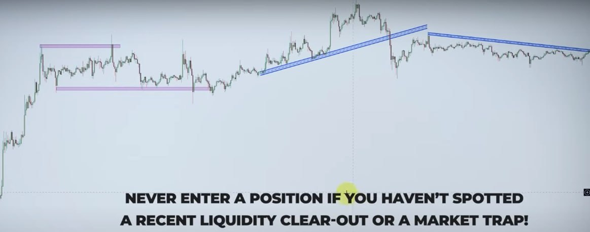
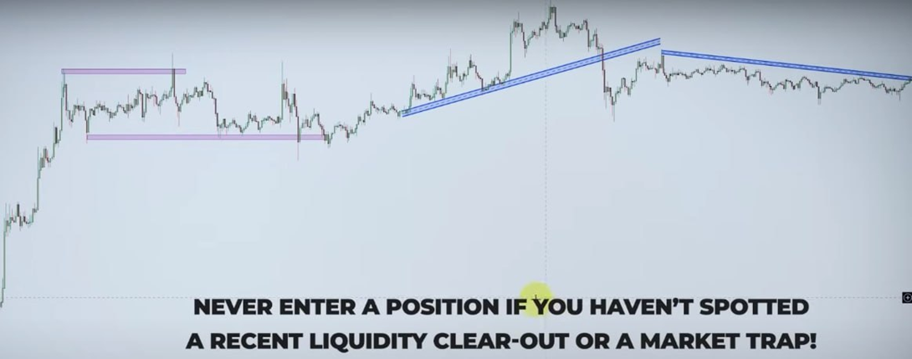

Module 12: Six Trading Strategies
Strategy No. 1: Demand Zone Entry After Liquidity Clear-Out
- Identify a liquidity run that breaks below a previous swing low or support level where many retail traders have placed their stop-loss orders.
- Identify a potential demand zone that was previously formed near the liquidity run.
- Wait for price to retest the demand zone and confirm its validity by finding signs of rejection or bounce (wicks, VSA confirmation).
- Enter a long position at or near the demand zone with a stop-loss below the zone or below the liquidity run.
- Exit the position at or near a previous swing high or at the next important supply area, or where smart money may initiate another liquidity run.
 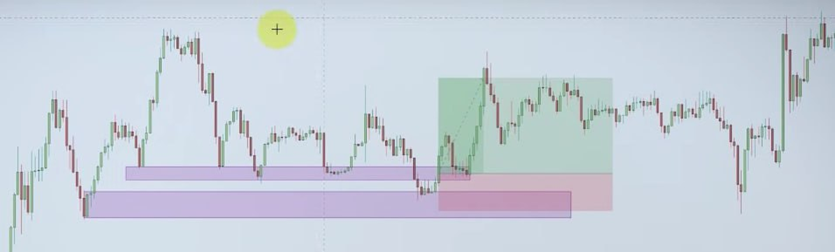
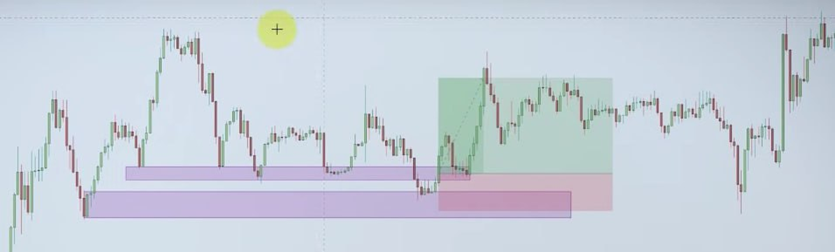
Strategy No. 2: Supply Zone Entry After Liquidity Clear-Out
- Identify a liquidity run that breaks above a previous swing high or resistance level where many retail traders have placed their stop-loss orders.
- Identify a potential supply zone that was previously formed near the liquidity run.
- Wait for price to retest the supply zone and confirm its validity by finding signs of rejection or bounce (wicks, VSA confirmation).
- Enter a short position at or near the supply zone with a stop-loss above the zone or above the liquidity run.
- Exit the position at or near a previous swing low or at the next important demand area, or where smart money may initiate another liquidity run. 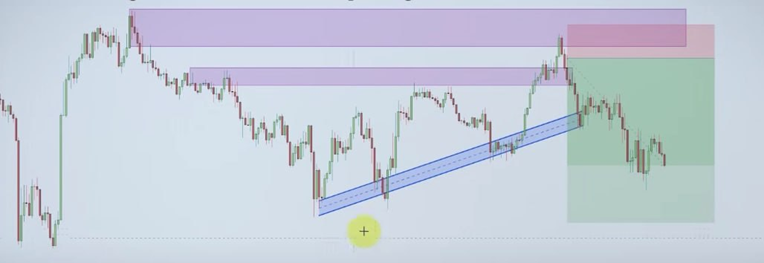
Strategy No. 3: Demand Zone Entry After Down Thrust VSA Pattern
- Find a down thrust formation, which appears as a bullish pin bar or a Doji bar having an ultra-high or above-average volume. The spread of the bar is low while the volume is relatively high – more demand than supply, potentially causing price to rise in the near future.
- Identify the potential demand zone around the same area.
- If you find a liquidity clear-out that's even better.
- Enter a long position at or near the demand zone with a stop-loss below the zone.
- Take profit at previous swing high or at the next important supply area or where smart money may initiate another liquidity run.

Strategy No. 4: Supply Zone Entry After Up Thrust VSA Pattern
- Find an up thrust formation, which appears as a bearish pin bar or a Doji bar having an ultra-high or above-average volume. The spread of the bar is low while the volume is relatively high – more supply than demand, potentially causing price to fall in the near future.
- Identify the potential supply zone around the same area.
- If you find a liquidity clear-out that's even better.
- Enter a short position at or near the demand zone with a stop-loss above the zone.
- Take profit near a previous swing low or at the next important demand area or where smart money may initiate another liquidity run.

Strategy No. 5: Over and Under Break of Structure
Break of structure is the first sign that smart money have initiated a price shift.
Bearish Over and Under:
- Price creates a higher high.
- Price creates a lower high.
- Price breaks the previous high and creates a new higher high.
- Price breaks the previous low as well and forms a lower low.
 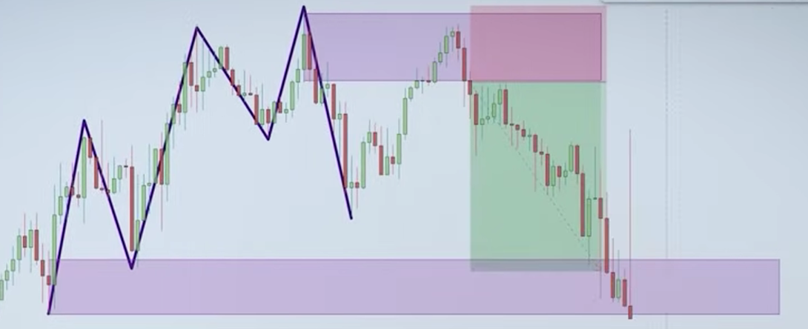
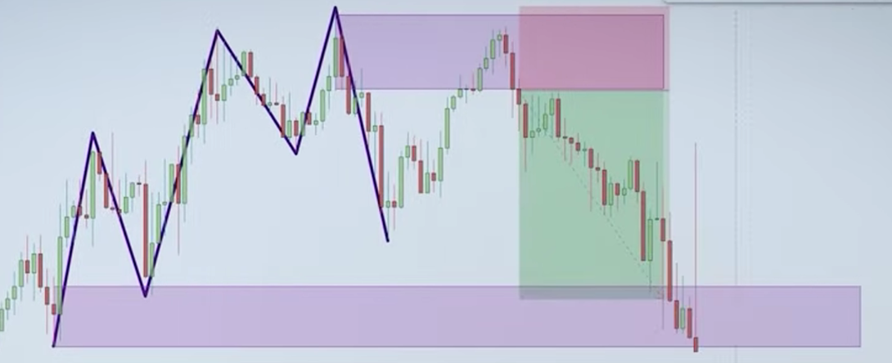
Bullish Over and Under:
- Price creates a lower low.
- Price creates a lower high.
- Price breaks the previous low and creates a new lower low.
- Price breaks the previous high as well and forms a higher high.


A break of structure doesn't always result in reversal! Align your positions with smart money using S/D Zones.
Trading Plan: Find a break of structure pattern, wait for a retracement, and find a supply and demand zone for an entry to execute the trade with higher accuracy.
- Break of structure: Lower Low - Lower High - Lower Low - Higher High
- Find the fresh demand zone (rally base rally) - look for the last bearish candle before the increase.
Strategy No. 6: Psychological Numbers and VSA Clear-Out
- Keep an eye on psychological numbers, i.e., price levels that have a significant impact on market sentiment and behavior – round numbers or multiples like 50, 100, etc.
- These numbers tend to act as support and resistance levels, as well as trigger points for stop-losses and take-profits, reflecting the collective psychology of market participants.
- You will often see increased volatility, increased volume, and many liquidity clear-outs around these levels.
- Sell Zone: Supply Zone + Psychological Level
- Buy Zone: Demand Zone + Psychological Level
- 1. Supply or Demand Zone
- 2. Liquidity Run
- 3. VSA Pattern
- 4. Psychological Number